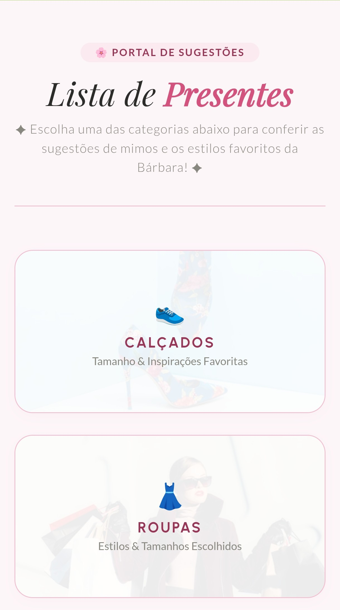
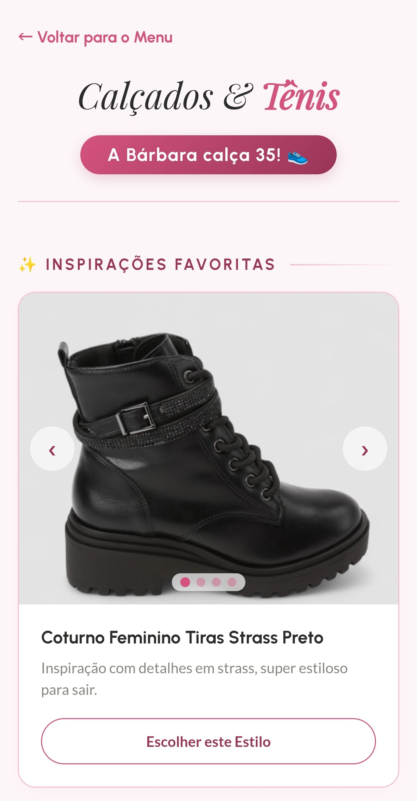
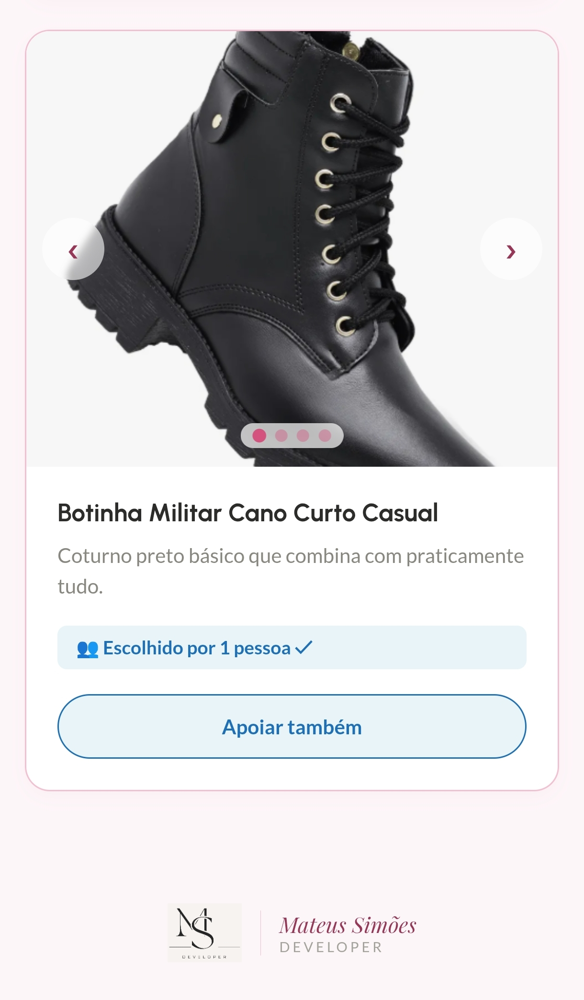
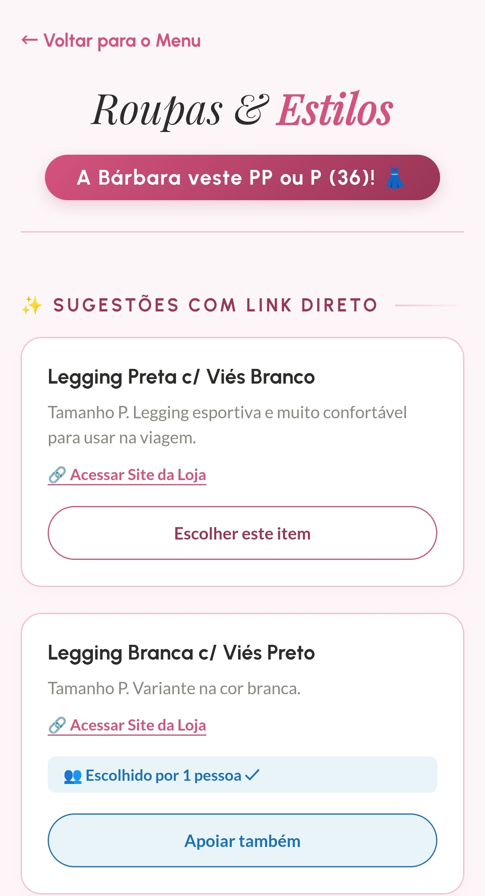
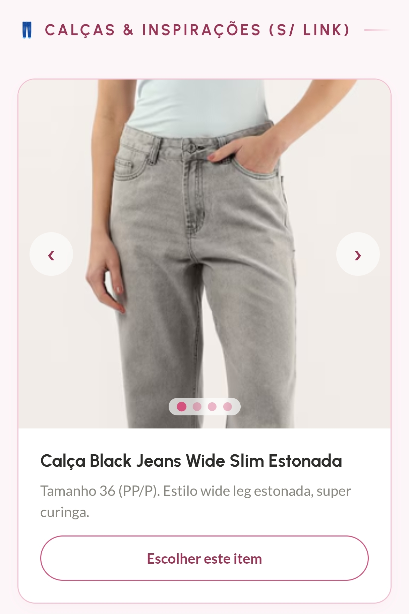
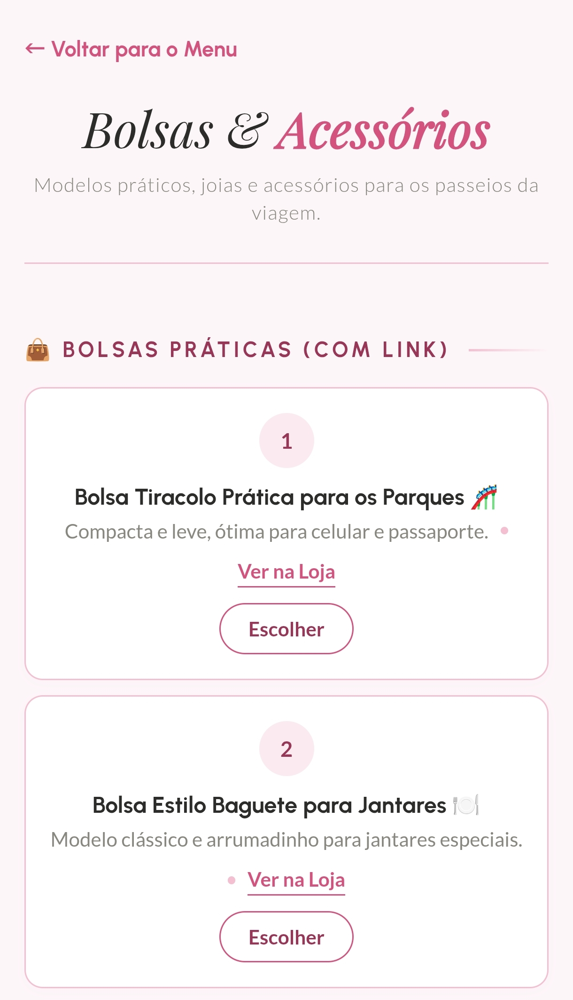
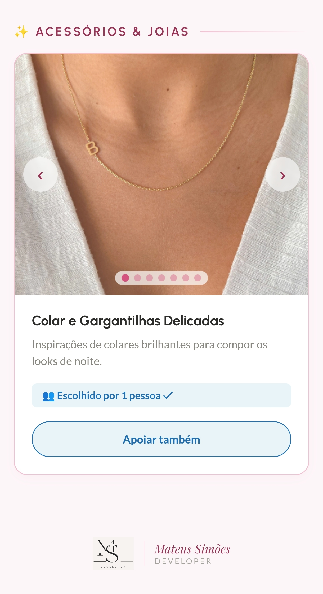
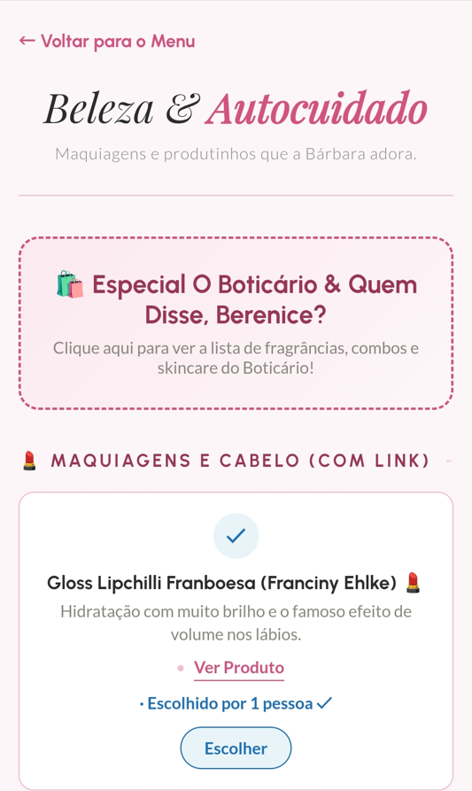
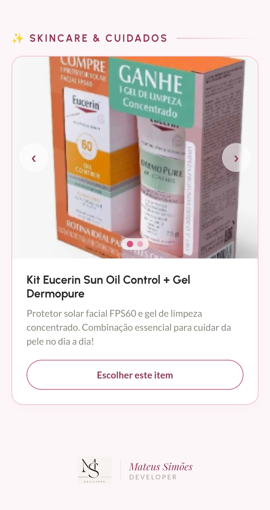

FOLHA Nº 01 — DETALHES DO PROJETO
Lista de Presentes Interativa
Web App · Eventos e Gestão Mobile-First
Lista de presentes inteligente, integrada a banco de dados em tempo real. Separa itens exclusivos e sugestões livres, esconde valores e mantém um relatório privado em PDF para os anfitriões.
FOLHA Nº 02 — O DESAFIO
Organização sem constrangimentos
Em grandes eventos comemorativos, como festas de 15 anos, a gestão da lista de presentes pode se tornar caótica. Convidados costumam dar presentes repetidos, e o uso de planilhas públicas expõe valores e nomes, gerando desconforto.
A necessidade era criar uma plataforma onde os convidados pudessem escolher os presentes de forma intuitiva pelo celular, com uma regra de negócios que tratasse a concorrência (duas pessoas escolhendo o mesmo presente ao mesmo tempo) e garantisse a discrição financeira.
FOLHA Nº 03 — A EXPERIÊNCIA DO CONVIDADO
Interface Mobile-First & Jornada do Usuário
Como a maioria dos convidados acessa o link através de aplicativos de mensagens, toda a interface foi projetada para telas de celular. A experiência foi dividida de forma a guiar o usuário sem fricções, informando previamente tamanhos e numerações para evitar compras erradas.

Portal Principal
Porta de entrada para os convidados. Funciona como um menu interativo que apresenta as quatro grandes categorias de presentes, guiando o usuário de forma fácil e direta.
Categorias Estruturadas


Calçados & Tênis
Destaca a numeração da aniversariante (35) e utiliza um carrossel de imagens para mostrar inspirações visuais como coturnos, botas e tênis.


Roupas & Estilos
Informa o tamanho exato (PP/P - 36). Combina itens específicos com links diretos para lojas e uma galeria de fotos com inspirações de looks e calças.


Bolsas & Acessórios
Focada em itens práticos. Traz listas com links diretos para e-commerce e um mural de fotos inspiracionais de joias e colares delicados.


Beleza & Autocuidado
Reúne produtos de maquiagem, cabelo e skincare. Possui links diretos, galerias e um cartão de destaque que redireciona para a lista exclusiva de O Boticário.
FOLHA Nº 04 — ARQUITETURA
Sincronização e Regras de Negócio
A inteligência principal do sistema roda em cima do banco de dados em tempo real. Os presentes são categorizados entre itens exclusivos que, assim que reservados, são imediatamente bloqueados para os demais convidados e cotas/sugestões livres. Para os anfitriões, criei um módulo administrativo que compila todas as reservas em um PDF de fácil visualização.
- Firebase Realtime Database
- JavaScript Vanilla (ES6+)
- Geração de PDF (Client-side)
- Design System Customizado